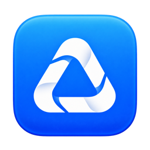

A fresh start.
With everything kept.
Move Desktop items into a dated archive. Choose daily or monthly folders, and a destination that makes sense to you.
Desktop Archive
2026-09September
2026-08August
2026-07July

ClearspaceTake a little tourA LITTLE EVERYDAY ORDER
A clearer Desktop. Downloads in their place.
Clearspace gives your files a home,
so you can get back to what matters.
Made for Mac · Local by design · Yours to control
MEET YOUR NEW CLEARSPACE
A little order goes a long way.
Try organizing the sample files below.
A LITTLE EVERYDAY ORDER
A clearer Desktop. Downloads in their place.
Choose the places you’d like to put in order.
Moves only. Undo is available in Receipts.
Organize whenever you’re ready.
NOTHING GETS LOST IN THE SHUFFLE
Every move has a receipt. Every eligible move has a way back.
Organize the sample files to see a receipt here.
SEE THE LITTLE THINGS ADD UP
See your organizing activity and where your files went.
Organize the sample files to see their destinations.
SMALL DETAILS. A LIGHTER DAY.
Built around the places files pile up,
and the reassurance you need to tidy them.
Move Desktop items into a dated archive. Choose daily or monthly folders, and a destination that makes sense to you.
Sort Downloads into familiar folders by file type. Documents, Images, Videos, Audio, Archives, Installers, and Other.
Select your Desktop and archive destination. Turn on Downloads sorting when you want it.
Preview proposed file moves and destinations, then organize when you’re ready.
Run manually, daily, or weekly while Clearspace is open. Check your receipts and undo eligible moves.
YOUR FILES. YOUR SAY.
A native Mac app. Files and receipts stay on your Mac, with access to the folders you choose.
Receipts show what moved and where. Undo restores eligible files when their original location is free.
Existing files are never overwritten. Matching names get a numbered suffix when organizing.
A FEW GOOD QUESTIONS
Organizing moves your files into folders. It does not delete them. Desktop items go to your selected archive; Downloads files go into folders by type inside Downloads. Cleanup is not part of the current app.
Yes. Open a receipt and choose Undo remaining moves. Clearspace checks that the moved file still matches and the original name is free. If something has changed, it leaves that item for you to review.
Choose Manual, Daily, or Weekly. Scheduled organization runs while Clearspace is running, including when its window is closed. It does not wake your Mac. You can enable Launch at login in Settings.
Clearspace skips known incomplete download types and files modified in the last 60 seconds. Existing folders, hidden items, packages, and symbolic links stay in place. This safeguard cannot identify every unfinished download.
No. The native app organizes files locally and stores receipts on your Mac. There is no account or AI service required.
Clearspace is currently in development for macOS 14 and later. This site is a product showcase; a public download is not available here yet. Explore the interactive demo to get a feel for it.
MAKE A LITTLE ROOM
Explore the demo. Enjoy the exhale.